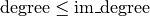

MeshIm¶
- class MeshIm(*args)¶
GeFEM MeshIm object
This object represents an integration method defined on a whole mesh (an potentialy on its boundaries).
General constructor for MeshIm objects
MIM = MeshIm('load', string fname[, Mesh m]) Load a MeshIm from a file.
If the mesh m is not supplied (this kind of file does not store the mesh), then it is read from the file and its descriptor is returned as the second output argument.
MIM = MeshIm('from string', string s[, Mesh m]) Create a MeshIm object from its string description.
See also MeshIm.char()
MIM = MeshIm('clone', MeshIm mim) Create a copy of a MeshIm.
MIM = MeshIm('levelset', MeshLevelSet mls, string where, Integ im[, Integ im_tip[, Integ im_set]]) Build an integration method conformal to a partition defined implicitely by a levelset.
The where argument define the domain of integration with respect to the levelset, it has to be chosen among ‘ALL’, ‘INSIDE’, ‘OUTSIDE’ and ‘BOUNDARY’.
it can be completed by a string defining the boolean operation to define the integration domain when there is more than one levelset.
the syntax is very simple, for example if there are 3 different levelset,
“a*b*c” is the intersection of the domains defined by each levelset (this is the default behaviour if this function is not called).
“a+b+c” is the union of their domains.
“c-(a+b)” is the domain of the third levelset minus the union of the domains of the two others.
”!a” is the complementary of the domain of a (i.e. it is the domain where a(x)>0)
The first levelset is always referred to with “a”, the second with “b”, and so on.
for intance INSIDE(a*b*c)
CAUTION: this integration method will be defined only on the element cut by the level-set. For the ‘ALL’, ‘INSIDE’ and ‘OUTSIDE’ options it is mandatory to use the method MeshIm.set_integ() to define the integration method on the remaining elements.
MIM = MeshIm(Mesh m, [{Integ im|int im_degree}]) Build a new MeshIm object.
For convenience, optional arguments (im or im_degree) can be provided, in that case a call to MeshIm.integ() is issued with these arguments.
- adapt()¶
For a MeshIm levelset object only. Adapt the integration methods to a change of the levelset function.
- char()¶
Output a string description of the MeshIm.
By default, it does not include the description of the linked Mesh object.
- convex_index()¶
Return the list of convexes who have a integration method.
Convexes who have the dummy IM_NONE method are not listed.
- display()¶
displays a short summary for a MeshIm object.
- eltm(em, cv, f=None)¶
Return the elementary matrix (or tensor) integrated on the convex cv.
WARNING
Be sure that the fem used for the construction of em is compatible with the fem assigned to element cv ! This is not checked by the function ! If the argument f is given, then the elementary tensor is integrated on the face f of cv instead of the whole convex.
- im_nodes(CVids=None)¶
Return the coordinates of the integration points, with their weights.
CVids may be a list of convexes, or a list of convex faces, such as returned by Mesh.region()
WARNING
Convexes which are not part of the mesh, or convexes which do not have an approximate integration method do not have their corresponding entry (this has no meaning for exact integration methods!).
- integ(CVids=None)¶
Return a list of integration methods used by the MeshIm.
I is an array of all Integ objects found in the convexes given in CVids. If CV2I was supplied as an output argument, it contains, for each convex listed in CVids, the index of its correspounding integration method in I.
Convexes which are not part of the mesh, or convexes which do not have any integration method have their correspounding entry in CV2I set to -1.
- linked_mesh()¶
Returns a reference to the Mesh object linked to mim.
- memsize()¶
Return the amount of memory (in bytes) used by the MeshIm object.
The result does not take into account the linked Mesh object.
- save(filename)¶
Saves a MeshIm in a text file (and optionaly its linked mesh object).
- set_integ(*args)¶
Synopsis: MeshIm.set_integ(self,{Integ im|int im_degree}[, ivec CVids])
Set the integration method.
Assign an integration method to all convexes whose #ids are listed in CVids. If CVids is not given, the integration is assigned to all convexes. It is possible to assign a specific integration method with an integration method handle im obtained via Integ(‘IM_SOMETHING’), or to let getfem choose a suitable integration method with im_degree (choosen such that polynomials of  are exactly integrated. If im_degree=-1, then the dummy integration method IM_NONE will be used.)

前のトピックへ
次のトピックへ
Download
Main documentations
- GetFEM++ User documentation
- Python Interface
- Matlab Interface
- Scilab Interface
- Gmm++
- GetFEM++ project